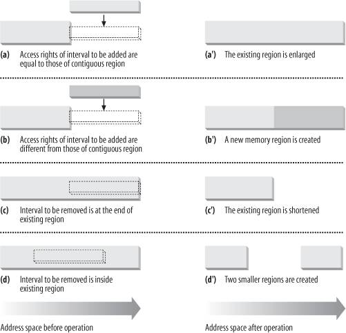
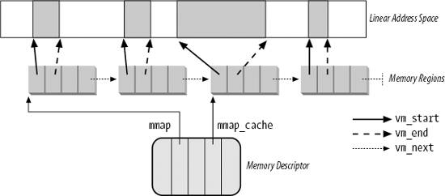
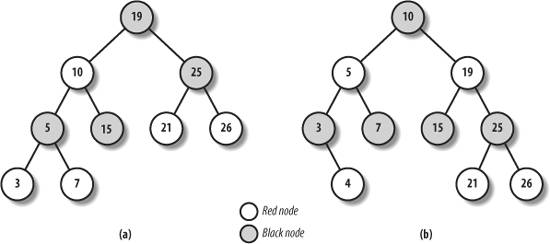

{% include JB/setup %}
{% raw %}
<div>


<a name="understandlk-CHP-9-SECT-3"></a>
<h3 class="docSection1Title" id="534869-863">9.3. Memory Regions</h3><a name="IDX-CHP-9-2325"></a>
<a name="IDX-CHP-9-2326"></a>
<a name="IDX-CHP-9-2327"></a>
<a name="IDX-CHP-9-2328"></a>
<a name="IDX-CHP-9-2329"></a>
<a name="IDX-CHP-9-2330"></a>
<p class="docText1">Linux implements a memory region by means of an object of type <tt class="calibre25">vm_area_struct</tt>; its fields are shown in <a class="pcalibre5 docLink pcalibre1" href="#understandlk-CHP-9-TABLE-3">Table 9-3</a>.<sup class="docFootnote"><a class="pcalibre5 docLink pcalibre1" href="#understandlk-CHP-9-FN2">[*]</a></sup></p><blockquote class="calibre22"><p class="docFootnote1"><sup class="calibre24"><a name="understandlk-CHP-9-FN2">[*]</a></sup> We omitted describing a few additional fields used in NUMA systems.</p></blockquote>
<a name="understandlk-CHP-9-TABLE-3"></a><p class="calibre14"><table cellspacing="0" frame="hsides" rules="all" cellpadding="4" width="100%" class="calibre15"><caption class="calibre33"><h5 class="docFigureTitle">Table 9-3. The fields of the memory region object</h5></caption><colgroup class="calibre16"><col class="calibre17"/><col class="calibre17"/><col class="calibre17"/></colgroup><thead class="calibre18"><tr class="calibre34"><th class="thead" scope="col"><p class="docText1"><span class="calibre5">Type</span></p></th><th class="thead" scope="col"><p class="docText1"><span class="calibre5">Field</span></p></th><th class="thead" scope="col"><p class="docText1"><span class="calibre5">Description</span></p></th></tr></thead><tr class="calibre2"><td class="docTableCell"><p class="docText2"><tt class="calibre25">struct mm_struct *</tt></p></td><td class="docTableCell"><p class="docText2"><tt class="calibre25">vm_mm</tt></p></td><td class="docTableCell"><p class="docText2">Pointer to the memory descriptor that owns the region.</p></td></tr><tr class="calibre2"><td class="docTableCell"><p class="docText2"><tt class="calibre25">unsigned long</tt></p></td><td class="docTableCell"><p class="docText2"><tt class="calibre25">vm_start</tt></p></td><td class="docTableCell"><p class="docText2">First linear address inside the region.</p></td></tr><tr class="calibre2"><td class="docTableCell"><p class="docText2"><tt class="calibre25">unsigned long</tt></p></td><td class="docTableCell"><p class="docText2"><tt class="calibre25">vm_end</tt></p></td><td class="docTableCell"><p class="docText2">First linear address after the region.</p></td></tr><tr class="calibre2"><td class="docTableCell"><p class="docText2"><tt class="calibre25">struct</tt></p><p class="docText2"><tt class="calibre25">vm_area_struct *</tt></p></td><td class="docTableCell" valign="top"><p class="docText2"><tt class="calibre25">vm_next</tt></p></td><td class="docTableCell" valign="top"><p class="docText2">Next region in the process list.</p></td></tr><tr class="calibre2"><td class="docTableCell"><p class="docText2"><tt class="calibre25">pgprot_t</tt></p></td><td class="docTableCell"><p class="docText2"><tt class="calibre25">vm_page_prot</tt></p></td><td class="docTableCell"><p class="docText2">Access permissions for the page frames of the region.</p></td></tr><tr class="calibre2"><td class="docTableCell"><p class="docText2"><tt class="calibre25">unsigned long</tt></p></td><td class="docTableCell"><p class="docText2"><tt class="calibre25">vm_flags</tt></p></td><td class="docTableCell"><p class="docText2">Flags of the region.</p></td></tr><tr class="calibre2"><td class="docTableCell"><p class="docText2"><tt class="calibre25">struct rb_node</tt></p></td><td class="docTableCell"><p class="docText2"><tt class="calibre25">vm_rb</tt></p></td><td class="docTableCell"><p class="docText2">Data for the red-black tree (see later in this chapter).</p></td></tr><tr class="calibre2"><td class="docTableCell" valign="top"><p class="docText2"><tt class="calibre25">union</tt></p></td><td class="docTableCell" valign="top"><p class="docText2"><tt class="calibre25">shared</tt></p></td><td class="docTableCell"><p class="docText2">Links to the data structures used for reverse mapping (see the section "<a class="pcalibre5 docLink pcalibre1" href="understandlk-CHP-17-SECT-2.html#understandlk-CHP-17-SECT-2.2">Reverse Mapping for Mapped Pages</a>" in <a class="pcalibre5 docLink pcalibre1" href="understandlk-CHP-17.html#understandlk-CHP-17">Chapter 17</a>).</p></td></tr><tr class="calibre2"><td class="docTableCell" valign="top"><p class="docText2">struct list_head</p></td><td class="docTableCell" valign="top"><p class="docText2">anon_vma_node</p></td><td class="docTableCell"><p class="docText2">Pointers for the list of anonymous memory regions (see the section "<a class="pcalibre5 docLink pcalibre1" href="understandlk-CHP-17-SECT-2.html#understandlk-CHP-17-SECT-2.1">Reverse Mapping for Anonymous Pages</a>" in <a class="pcalibre5 docLink pcalibre1" href="understandlk-CHP-17.html#understandlk-CHP-17">Chapter 17</a>).</p></td></tr><tr class="calibre2"><td class="docTableCell" valign="top"><p class="docText2">struct anon_vma *</p></td><td class="docTableCell" valign="top"><p class="docText2">anon_vma</p></td><td class="docTableCell"><p class="docText2">Pointer to the <tt class="calibre25">anon_vma</tt> data structure (see the section "<a class="pcalibre5 docLink pcalibre1" href="understandlk-CHP-17-SECT-2.html#understandlk-CHP-17-SECT-2.1">Reverse Mapping for Anonymous Pages</a>" in <a class="pcalibre5 docLink pcalibre1" href="understandlk-CHP-17.html#understandlk-CHP-17">Chapter 17</a>).</p></td></tr><tr class="calibre2"><td class="docTableCell"><p class="docText2"><tt class="calibre25">struct</tt></p><p class="docText2"><tt class="calibre25">vm_operations_struct*</tt></p></td><td class="docTableCell" valign="top"><p class="docText2"><tt class="calibre25">vm_ops</tt></p></td><td class="docTableCell" valign="top"><p class="docText2">Pointer to the methods of the memory region.</p></td></tr><tr class="calibre2"><td class="docTableCell" valign="top"><p class="docText2"><tt class="calibre25">unsigned long</tt></p></td><td class="docTableCell" valign="top"><p class="docText2"><tt class="calibre25">vm_pgoff</tt></p></td><td class="docTableCell"><p class="docText2">Offset in mapped file (see <a class="pcalibre5 docLink pcalibre1" href="understandlk-CHP-16.html#understandlk-CHP-16">Chapter 16</a>). For anonymous pages, it is either zero or equal to <tt class="calibre25">vm_start/PAGE_SIZE</tt> (see <a class="pcalibre5 docLink pcalibre1" href="understandlk-CHP-17.html#understandlk-CHP-17">Chapter 17</a>).</p></td></tr><tr class="calibre2"><td class="docTableCell"><p class="docText2"><tt class="calibre25">struct file *</tt></p></td><td class="docTableCell"><p class="docText2"><tt class="calibre25">vm_file</tt></p></td><td class="docTableCell"><p class="docText2">Pointer to the file object of the mapped file, if any.</p></td></tr><tr class="calibre2"><td class="docTableCell"><p class="docText2"><tt class="calibre25">void *</tt></p></td><td class="docTableCell"><p class="docText2"><tt class="calibre25">vm_private_data</tt></p></td><td class="docTableCell"><p class="docText2">Pointer to private data of the memory region.</p></td></tr><tr class="calibre2"><td class="docTableCell"><p class="docText2">unsigned long</p></td><td class="docTableCell"><p class="docText2">vm_truncate_count</p></td><td class="docTableCell"><p class="docText2">Used when releasing a linear address interval in a non-linear file memory mapping.</p></td></tr></table></p><br class="calibre7"/>
<p class="docText1">Each memory region descriptor identifies a linear address interval. The <tt class="calibre25">vm_start</tt> field contains the first linear address of the interval, while the <tt class="calibre25">vm_end</tt> field contains the first linear address outside of the interval; <tt class="calibre25">vm_end-vm_start</tt> thus denotes the length of the memory region. The <tt class="calibre25">vm_mm</tt> field points to the <tt class="calibre25">mm_struct</tt> memory descriptor of the process that owns the region. We will describe the other fields of <tt class="calibre25">vm_area_struct</tt> as they come up.</p>
<p class="docText1">Memory regions owned by a process never overlap, and the kernel tries to merge regions when a new one is allocated right next to an existing one. Two adjacent regions can be merged if their access rights match.</p>
<p class="docText1">As shown in <a class="pcalibre5 docLink pcalibre1" href="#understandlk-CHP-9-FIG-1">Figure 9-1</a>, when a new range of linear addresses is added to the process address space, the kernel checks whether an already existing memory region can be enlarged (case <span class="docEmphasis">a</span>). If not, a new memory region is created (case <span class="docEmphasis">b</span>). Similarly, if a range of linear addresses is removed from the process address space, the kernel resizes the affected memory regions (case <span class="docEmphasis">c</span>). In some cases, the resizing forces a memory region to split into two smaller ones (case <span class="docEmphasis">d</span>) .<sup class="docFootnote"><a class="pcalibre5 docLink pcalibre1" href="#understandlk-CHP-9-FN3">[*]</a></sup></p><blockquote class="calibre22"><p class="docFootnote1"><sup class="calibre24"><a name="understandlk-CHP-9-FN3">[*]</a></sup> Removing a linear address interval may theoretically fail because no free memory is available for a new memory descriptor.</p></blockquote>
<a name="understandlk-CHP-9-FIG-1"></a><p class="calibre14"><center class="calibre8">
<h5 class="docFigureTitle">Figure 9-1. Adding or removing a linear address interval</h5>
</center></p><br class="calibre7"/>
<p class="docText1">The <tt class="calibre25">vm_ops</tt> field points to a <tt class="calibre25">vm_operations_struct</tt> data structure, which stores the methods of the memory region. Only four methodsillustrated in <a class="pcalibre5 docLink pcalibre1" href="#understandlk-CHP-9-TABLE-4">Table 9-4</a>are applicable to UMA systems.</p>
<a name="understandlk-CHP-9-TABLE-4"></a><p class="calibre14"><table cellspacing="0" frame="hsides" rules="all" cellpadding="4" width="100%" class="calibre15"><caption class="calibre33"><h5 class="docFigureTitle">Table 9-4. The methods to act on a memory region</h5></caption><colgroup class="calibre16"><col class="calibre17"/><col class="calibre17"/></colgroup><thead class="calibre18"><tr class="calibre34"><th class="thead" scope="col"><p class="docText1"><span class="calibre5">Method</span></p></th><th class="thead" scope="col"><p class="docText1"><span class="calibre5">Description</span></p></th></tr></thead><tr class="calibre2"><td class="docTableCell"><p class="docText2"><tt class="calibre25">open</tt></p></td><td class="docTableCell"><p class="docText2">Invoked when the memory region is added to the set of regions owned by a process.</p></td></tr><tr class="calibre2"><td class="docTableCell"><p class="docText2"><tt class="calibre25">close</tt></p></td><td class="docTableCell"><p class="docText2">Invoked when the memory region is removed from the set of regions owned by a process.</p></td></tr><tr class="calibre2"><td class="docTableCell" valign="top"><p class="docText2"><tt class="calibre25">nopage</tt></p></td><td class="docTableCell" valign="top"><p class="docText2">Invoked by the Page Fault exception handler when a process tries to access a page not present in RAM whose linear address belongs to the memory region (see the later section "<a class="pcalibre5 docLink pcalibre1" href="understandlk-CHP-9-SECT-4.html#understandlk-CHP-9-SECT-4">Page Fault Exception Handler</a>").</p></td></tr><tr class="calibre2"><td class="docTableCell" valign="top"><p class="docText2"><tt class="calibre25">populate</tt></p></td><td class="docTableCell" valign="top"><p class="docText2">Invoked to set the page table entries corresponding to the linear addresses of the memory region (prefaulting). Mainly used for non-linear file memory mappings.</p></td></tr></table></p><br class="calibre7"/>
<a name="understandlk-CHP-9-SECT-3.1"></a>
<h4 class="docSection2Title">9.3.1. Memory Region Data Structures</h4><a name="IDX-CHP-9-2331"></a>
<a name="IDX-CHP-9-2332"></a>
<p class="docText1">All the regions owned by a process are linked in a simple list. Regions appear in the list in ascending order by memory address; however, successive regions can be separated by an area of unused memory addresses. The <tt class="calibre25">vm_next</tt> field of each <tt class="calibre25">vm_area_struct</tt> element points to the next element in the list. The kernel finds the memory regions through the <tt class="calibre25">mmap</tt> field of the process memory descriptor, which points to the first memory region descriptor in the list.</p>
<p class="docText1">The <tt class="calibre25">map_count</tt> field of the memory descriptor contains the number of regions owned by the process. By default, a process may own up to 65,536 different memory regions; however, the system administrator may change this limit by writing in the <i class="docEmphasis">/proc/sys/vm/max_map_count</i> file.</p>
<p class="docText1"><a class="pcalibre5 docLink pcalibre1" href="#understandlk-CHP-9-FIG-2">Figure 9-2</a> illustrates the relationships among the address space of a process, its memory descriptor, and the list of memory regions.</p>
<a name="understandlk-CHP-9-FIG-2"></a><p class="calibre14"><center class="calibre8">
<h5 class="docFigureTitle">Figure 9-2. Descriptors related to the address space of a process</h5>
</center></p><br class="calibre7"/>
<p class="docText1">A frequent operation performed by the kernel is to search the memory region that includes a specific linear address. Because the list is sorted, the search can terminate as soon as a memory region that ends after the specific linear address is found.</p>
<p class="docText1">However, using the list is convenient only if the process has very few memory regionslet's say less than a few tens of them. Searching, inserting elements, and deleting elements in the list involve a number of operations whose times are linearly proportional to the list length.</p>
<p class="docText1">Although most Linux processes use very few memory regions, there are some large applications, such as object-oriented databases or specialized debuggers for the usage of <tt class="calibre25">malloc()</tt>, that have many hundreds or even thousands of regions. In such cases, the memory region list management becomes very inefficient, hence the performance of the memory-related system calls degrades to an intolerable point.</p>
<p class="docText1">Therefore, Linux 2.6 stores memory descriptors in data structures called <span class="docEmphasis">red-black trees</span><a name="IDX-CHP-9-2333"></a>
<a name="IDX-CHP-9-2334"></a> 
. In a red-black tree, each element (or <span class="docEmphasis">node</span>) usually has two children: a <span class="docEmphasis">left child</span> and a <span class="docEmphasis">right child</span>. The elements in the tree are sorted. For each node <span class="docEmphasis">N</span>, all elements of the subtree rooted at the left child of <span class="docEmphasis">N</span> precede <span class="docEmphasis">N</span>, while, conversely, all elements of the subtree rooted at the right child of <span class="docEmphasis">N</span> follow <span class="docEmphasis">N</span> (see <a class="pcalibre5 docLink pcalibre1" href="#understandlk-CHP-9-FIG-3">Figure 9-3</a>(<i class="docEmphasis">a</i>); the key of the node is written inside the node itself. Moreover, a red-black tree must satisfy four additional rules:</p>
<div class="calibre44"><ol class="docList1" type="1"><li class="calibre12"><div class="calibre45"><p class="docList">Every node must be either red or black.</p></div></li><li class="calibre12"><div class="calibre45"><p class="docList">The root of the tree must be black.</p></div></li><li class="calibre12"><div class="calibre45"><p class="docList">The children of a red node must be black.</p></div></li><li class="calibre12"><div class="calibre45"><p class="docList">Every path from a node to a descendant leaf must contain the same number of black nodes<a name="IDX-CHP-9-2335"></a> 
. When counting the number of black nodes, null pointers are counted as black nodes.</p></div></li></ol></div>
<a name="understandlk-CHP-9-FIG-3"></a><p class="calibre14"><center class="calibre8">
<h5 class="docFigureTitle">Figure 9-3. Example of red-black trees</h5>
</center></p><br class="calibre7"/>
<p class="docText1">These four rules ensure that every red-black tree with <span class="docEmphasis">n</span> internal nodes has a height of at most 2 x log(n + 1).</p>
<p class="docText1">Searching an element in a red-black tree is thus very efficient, because it requires operations whose execution time is linearly proportional to the logarithm of the tree size. In other words, doubling the number of memory regions adds just one more iteration to the operation.</p>
<p class="docText1">Inserting and deleting an element in a red-black tree is also efficient, because the algorithm can quickly traverse the tree to locate the position at which the element will be inserted or from which it will be removed. Each new node must be inserted as a leaf and colored red. If the operation breaks the rules, a few nodes of the tree must be moved or recolored.</p>
<p class="docText1">For instance, suppose that an element having the value 4 must be inserted in the red-black tree shown in <a class="pcalibre5 docLink pcalibre1" href="#understandlk-CHP-9-FIG-3">Figure 9-3</a>(a). Its proper position is the right child of the node that has key 3, but once it is inserted, the red node that has the value 3 has a red child, thus breaking rule 3. To satisfy the rule, the color of nodes that have the values 3, 4, and 7 is changed. This operation, however, breaks rule 4, thus the algorithm performs a "rotation" on the subtree rooted at the node that has the key 19, producing the new red-black tree shown in <a class="pcalibre5 docLink pcalibre1" href="#understandlk-CHP-9-FIG-3">Figure 9-3</a>(b). This looks complicated, but inserting or deleting an element in a red-black tree requires a small number of operationsa number linearly proportional to the logarithm of the tree size.</p>
<p class="docText1">Therefore, to store the memory regions of a process, Linux uses both a linked list and a red-black tree. Both data structures contain pointers to the same memory region descriptors. When inserting or removing a memory region descriptor, the kernel searches the previous and next elements through the red-black tree and uses them to quickly update the list without scanning it.</p>
<p class="docText1">The head of the linked list is referenced by the <tt class="calibre25">mmap</tt> field of the memory descriptor. Each memory region object stores the pointer to the next element of the list in the <tt class="calibre25">vm_next</tt> field. The head of the red-black tree is referenced by the <tt class="calibre25">mm_rb</tt> field of the memory descriptor. Each memory region object stores the color of the node, as well as the pointers to the parent, the left child, and the right child, in the <tt class="calibre25">vm_rb</tt> field of type <tt class="calibre25">rb_node</tt>.</p>
<p class="docText1">In general, the red-black tree is used to locate a region including a specific address, while the linked list is mostly useful when scanning the whole set of regions.</p>
<a name="understandlk-CHP-9-SECT-3.2"></a>
<h4 class="docSection2Title">9.3.2. Memory Region Access Rights</h4><a name="IDX-CHP-9-2336"></a>
<a name="IDX-CHP-9-2337"></a>
<a name="IDX-CHP-9-2338"></a>
<a name="IDX-CHP-9-2339"></a>
<a name="IDX-CHP-9-2340"></a>
<a name="IDX-CHP-9-2341"></a>
<a name="IDX-CHP-9-2342"></a>
<a name="IDX-CHP-9-2343"></a>
<a name="IDX-CHP-9-2344"></a>
<a name="IDX-CHP-9-2345"></a>
<a name="IDX-CHP-9-2346"></a>
<a name="IDX-CHP-9-2347"></a>
<a name="IDX-CHP-9-2348"></a>
<a name="IDX-CHP-9-2349"></a>
<a name="IDX-CHP-9-2350"></a>
<a name="IDX-CHP-9-2351"></a>
<a name="IDX-CHP-9-2352"></a>
<a name="IDX-CHP-9-2353"></a>
<a name="IDX-CHP-9-2354"></a>
<a name="IDX-CHP-9-2355"></a>
<a name="IDX-CHP-9-2356"></a>
<a name="IDX-CHP-9-2357"></a>
<a name="IDX-CHP-9-2358"></a>
<a name="IDX-CHP-9-2359"></a>
<a name="IDX-CHP-9-2360"></a>
<a name="IDX-CHP-9-2361"></a>
<a name="IDX-CHP-9-2362"></a>
<p class="docText1">Before moving on, we should clarify the relation between a page and a memory region. As mentioned in <a class="pcalibre5 docLink pcalibre1" href="understandlk-CHP-2.html#understandlk-CHP-2">Chapter 2</a>, we use the term "page" to refer both to a set of linear addresses and to the data contained in this group of addresses. In particular, we denote the linear address interval ranging between 0 and 4,095 as page 0, the linear address interval ranging between 4,096 and 8,191 as page 1, and so forth. Each memory region therefore consists of a set of pages that have consecutive page numbers.</p>
<p class="docText1">We have already discussed two kinds of flags associated with a page:</p>
<ul class="calibre11"><li class="calibre12"><p class="docText1">A few flags such as <tt class="calibre25">Read/Write</tt>, <tt class="calibre25">Present</tt>, or <tt class="calibre25">User/Supervisor</tt> stored in each Page Table entry (see the section "<a class="pcalibre5 docLink pcalibre1" href="understandlk-CHP-2-SECT-4.html#understandlk-CHP-2-SECT-4.1">Regular Paging</a>" in <a class="pcalibre5 docLink pcalibre1" href="understandlk-CHP-2.html#understandlk-CHP-2">Chapter 2</a>).</p></li><li class="calibre12"><p class="docText1">A set of flags stored in the <tt class="calibre25">flags</tt> field of each <tt class="calibre25">page</tt> descriptor (see the section "<a class="pcalibre5 docLink pcalibre1" href="understandlk-CHP-8-SECT-1.html#understandlk-CHP-8-SECT-1">Page Frame Management</a>" in <a class="pcalibre5 docLink pcalibre1" href="understandlk-CHP-8.html#understandlk-CHP-8">Chapter 8</a>).</p></li></ul>
<p class="docText1">The first kind of flag is used by the 80 x 86 hardware to check whether the requested kind of addressing can be performed; the second kind is used by Linux for many different purposes (see <a class="pcalibre5 docLink pcalibre1" href="understandlk-CHP-8-SECT-1.html#understandlk-CHP-8-TABLE-2">Table 8-2</a>).</p>
<p class="docText1">We now introduce a third kind of flag: those associated with the pages of a memory region. They are stored in the <tt class="calibre25">vm_flags</tt> field of the <tt class="calibre25">vm_area_struct</tt> descriptor (see <a class="pcalibre5 docLink pcalibre1" href="#understandlk-CHP-9-TABLE-5">Table 9-5</a>). Some flags<a name="IDX-CHP-9-2363"></a> 
 offer the kernel information about all the pages of the memory region, such as what they contain and what rights the process has to access each page. Other flags describe the region itself, such as how it can grow.</p>
<a name="understandlk-CHP-9-TABLE-5"></a><p class="calibre14"><table cellspacing="0" frame="hsides" rules="all" cellpadding="4" width="100%" class="calibre15"><caption class="calibre33"><h5 class="docFigureTitle">Table 9-5. The memory region flags</h5></caption><colgroup class="calibre16"><col class="calibre17"/><col class="calibre17"/></colgroup><thead class="calibre18"><tr class="calibre34"><th class="thead" scope="col"><p class="docText1"><span class="calibre5">Flag name</span></p></th><th class="thead" scope="col"><p class="docText1"><span class="calibre5">Description</span></p></th></tr></thead><tr class="calibre2"><td class="docTableCell"><p class="docText2"><tt class="calibre25">VM_READ</tt></p></td><td class="docTableCell"><p class="docText2">Pages can be read</p></td></tr><tr class="calibre2"><td class="docTableCell"><p class="docText2"><tt class="calibre25">VM_WRITE</tt></p></td><td class="docTableCell"><p class="docText2">Pages can be written</p></td></tr><tr class="calibre2"><td class="docTableCell"><p class="docText2"><tt class="calibre25">VM_EXEC</tt></p></td><td class="docTableCell"><p class="docText2">Pages can be executed</p></td></tr><tr class="calibre2"><td class="docTableCell"><p class="docText2"><tt class="calibre25">VM_SHARED</tt></p></td><td class="docTableCell"><p class="docText2">Pages can be shared by several processes</p></td></tr><tr class="calibre2"><td class="docTableCell"><p class="docText2"><tt class="calibre25">VM_MAYREAD</tt></p></td><td class="docTableCell"><p class="docText2"><tt class="calibre25">VM_READ</tt> flag may be set</p></td></tr><tr class="calibre2"><td class="docTableCell"><p class="docText2"><tt class="calibre25">VM_MAYWRITE</tt></p></td><td class="docTableCell"><p class="docText2"><tt class="calibre25">VM_WRITE</tt> flag may be set</p></td></tr><tr class="calibre2"><td class="docTableCell"><p class="docText2"><tt class="calibre25">VM_MAYEXEC</tt></p></td><td class="docTableCell"><p class="docText2"><tt class="calibre25">VM_EXEC</tt> flag may be set</p></td></tr><tr class="calibre2"><td class="docTableCell"><p class="docText2"><tt class="calibre25">VM_MAYSHARE</tt></p></td><td class="docTableCell"><p class="docText2"><tt class="calibre25">VM_SHARE</tt> flag may be set</p></td></tr><tr class="calibre2"><td class="docTableCell"><p class="docText2"><tt class="calibre25">VM_GROWSDOWN</tt></p></td><td class="docTableCell"><p class="docText2">The region can expand toward lower addresses</p></td></tr><tr class="calibre2"><td class="docTableCell"><p class="docText2"><tt class="calibre25">VM_GROWSUP</tt></p></td><td class="docTableCell"><p class="docText2">The region can expand toward higher addresses</p></td></tr><tr class="calibre2"><td class="docTableCell"><p class="docText2"><tt class="calibre25">VM_SHM</tt></p></td><td class="docTableCell"><p class="docText2">The region is used for IPC's shared memory</p></td></tr><tr class="calibre2"><td class="docTableCell"><p class="docText2"><tt class="calibre25">VM_DENYWRITE</tt></p></td><td class="docTableCell"><p class="docText2">The region maps a file that cannot be opened for writing</p></td></tr><tr class="calibre2"><td class="docTableCell"><p class="docText2"><tt class="calibre25">VM_EXECUTABLE</tt></p></td><td class="docTableCell"><p class="docText2">The region maps an executable file</p></td></tr><tr class="calibre2"><td class="docTableCell"><p class="docText2"><tt class="calibre25">VM_LOCKED</tt></p></td><td class="docTableCell"><p class="docText2">Pages in the region are locked and cannot be swapped out</p></td></tr><tr class="calibre2"><td class="docTableCell"><p class="docText2"><tt class="calibre25">VM_IO</tt></p></td><td class="docTableCell"><p class="docText2">The region maps the I/O address space of a device</p></td></tr><tr class="calibre2"><td class="docTableCell"><p class="docText2"><tt class="calibre25">VM_SEQ_READ</tt></p></td><td class="docTableCell"><p class="docText2">The application accesses the pages sequentially</p></td></tr><tr class="calibre2"><td class="docTableCell"><p class="docText2"><tt class="calibre25">VM_RAND_READ</tt></p></td><td class="docTableCell"><p class="docText2">The application accesses the pages in a truly random order</p></td></tr><tr class="calibre2"><td class="docTableCell"><p class="docText2"><tt class="calibre25">VM_DONTCOPY</tt></p></td><td class="docTableCell"><p class="docText2">Do not copy the region when forking a new process</p></td></tr><tr class="calibre2"><td class="docTableCell"><p class="docText2"><tt class="calibre25">VM_DONTEXPAND</tt></p></td><td class="docTableCell"><p class="docText2">Forbid region expansion through <tt class="calibre25">mremap( )</tt><a name="IDX-CHP-9-2364"></a> 
 system call</p></td></tr><tr class="calibre2"><td class="docTableCell"><p class="docText2"><tt class="calibre25">VM_RESERVED</tt></p></td><td class="docTableCell"><p class="docText2">The region is special (for instance, it maps the I/O address space of a device), so its pages must not be swapped out</p></td></tr><tr class="calibre2"><td class="docTableCell"><p class="docText2"><tt class="calibre25">VM_ACCOUNT</tt></p></td><td class="docTableCell"><p class="docText2">Check whether there is enough free memory for the mapping when creating an IPC shared memory region (see <a class="pcalibre5 docLink pcalibre1" href="understandlk-CHP-19.html#understandlk-CHP-19">Chapter 19</a>)</p></td></tr><tr class="calibre2"><td class="docTableCell"><p class="docText2"><tt class="calibre25">VM_HUGETLB</tt></p></td><td class="docTableCell"><p class="docText2">The pages in the region are handled through the extended paging mechanism (see the section "<a class="pcalibre5 docLink pcalibre1" href="understandlk-CHP-2-SECT-4.html#understandlk-CHP-2-SECT-4.2">Extended Paging</a>" in <a class="pcalibre5 docLink pcalibre1" href="understandlk-CHP-2.html#understandlk-CHP-2">Chapter 2</a>)</p></td></tr><tr class="calibre2"><td class="docTableCell"><p class="docText2"><tt class="calibre25">VM_NONLINEAR</tt></p></td><td class="docTableCell"><p class="docText2">The region implements a non-linear file mapping</p></td></tr></table></p><br class="calibre7"/>
<p class="docText1">Page access rights included in a memory region descriptor may be combined arbitrarily. It is possible, for instance, to allow the pages of a region to be read but not executed. To implement this protection scheme efficiently, the Read, Write, and Execute access rights associated with the pages of a memory region must be duplicated in all the corresponding Page Table entries, so that checks can be directly performed by the Paging Unit circuitry. In other words, the page access rights dictate what kinds of access should generate a Page Fault<a name="IDX-CHP-9-2365"></a> 
 exception. As we'll see shortly, the job of figuring out what caused the Page Fault is delegated by Linux to the Page Fault handler, which implements several page-handling strategies.</p>
<p class="docText1">The initial values of the Page Table flags (which must be the same for all pages in the memory region, as we have seen) are stored in the <tt class="calibre25">vm_ page_ prot</tt> field of the <tt class="calibre25">vm_area_struct</tt> descriptor. When adding a page, the kernel sets the flags in the corresponding Page Table entry according to the value of the <tt class="calibre25">vm_ page_ prot</tt> field.</p>
<p class="docText1">However, translating the memory region's access rights into the page protection bits<a name="IDX-CHP-9-2366"></a> 
 is not straightforward for the following reasons:</p>
<ul class="calibre11"><li class="calibre12"><p class="docText1">In some cases, a page access should generate a Page Fault exception even when its access type is granted by the page access rights specified in the <tt class="calibre25">vm_flags</tt> field of the corresponding memory region. For instance, as we'll see in the section "<a class="pcalibre5 docLink pcalibre1" href="understandlk-CHP-9-SECT-4.html#understandlk-CHP-9-SECT-4.4">Copy On Write</a>" later in this chapter, the kernel may wish to store two identical, writable private pages (whose <tt class="calibre25">VM_SHARE</tt> flags are cleared) belonging to two different processes in the same page frame; in this case, an exception should be generated when either one of the processes tries to modify the page.</p></li><li class="calibre12"><p class="docText1">As mentioned in <a class="pcalibre5 docLink pcalibre1" href="understandlk-CHP-2.html#understandlk-CHP-2">Chapter 2</a>, 80 x 86 processors's Page Tables have just two protection bits, namely the <tt class="calibre25">Read/Write</tt> and <tt class="calibre25">User/Supervisor</tt> flags. Moreover, the <tt class="calibre25">User/Supervisor</tt> flag of every page included in a memory region must always be set, because the page must always be accessible by User Mode processes.</p></li><li class="calibre12"><p class="docText1">Recent Intel Pentium 4 microprocessors with PAE enabled sport a <tt class="calibre25">NX</tt> (No eXecute) flag in each 64-bit Page Table entry.</p></li></ul>
<p class="docText1">If the kernel has been compiled without support for PAE, Linux adopts the following rules, which overcome the hardware limitation of the 80 x 86 microprocessors:</p>
<ul class="calibre11"><li class="calibre12"><p class="docText1">The Read access right always implies the Execute access right, and vice versa.</p></li><li class="calibre12"><p class="docText1">The Write access right always implies the Read access right.</p></li></ul>
<p class="docText1">Conversely, if the kernel has been compiled with support for PAE and the CPU has the <tt class="calibre25">NX</tt> flag, Linux adopts different rules:</p>
<ul class="calibre11"><li class="calibre12"><p class="docText1">The Execute access right always implies the Read access right.</p></li><li class="calibre12"><p class="docText1">The Write access right always implies the Read access right.</p></li></ul>
<p class="docText1">Moreover, to correctly defer the allocation of page frames through the "<a class="pcalibre5 docLink pcalibre1" href="understandlk-CHP-9-SECT-4.html#understandlk-CHP-9-SECT-4.4">Copy On Write</a>" technique (see later in this chapter), the page frame is write-protected whenever the corresponding page must not be shared by several processes.</p>
<p class="docText1">Therefore, the 16 possible combinations of the Read, Write, Execute, and Share access rights are scaled down according to the following rules:</p>
<ul class="calibre11"><li class="calibre12"><p class="docText1">If the page has both Write and Share access rights, the <tt class="calibre25">Read/Write</tt> bit is set.</p></li><li class="calibre12"><p class="docText1">If the page has the Read or Execute access right but does not have either the Write or the Share access right, the <tt class="calibre25">Read/Write</tt> bit is cleared.</p></li><li class="calibre12"><p class="docText1">If the <tt class="calibre25">NX</tt> bit is supported and the page does not have the Execute access right, the <tt class="calibre25">NX</tt> bit is set.</p></li><li class="calibre12"><p class="docText1">If the page does not have any access rights, the <tt class="calibre25">Present</tt> bit is cleared so that each access generates a Page Fault exception. However, to distinguish this condition from the real page-not-present case, Linux also sets the <tt class="calibre25">Page size</tt> bit to 1.<sup class="docFootnote"><a class="pcalibre5 docLink pcalibre1" href="#understandlk-CHP-9-FN4">[*]</a></sup></p><blockquote class="calibre22"><p class="docFootnote1"><sup class="calibre24"><a name="understandlk-CHP-9-FN4">[*]</a></sup> You might consider this use of the <tt class="calibre42">Page size</tt> bit to be a dirty trick, because the bit was meant to indicate the real page size. But Linux can get away with the deception because the 80 x 86 chip checks the <tt class="calibre42">Page size</tt> bit in Page Directory entries, but not in Page Table entries.</p></blockquote></li></ul>
<p class="docText1">The downscaled protection bits corresponding to each combination of access rights are stored in the 16 elements of the <tt class="calibre25">protection_map</tt> array.</p>
<a name="understandlk-CHP-9-SECT-3.3"></a>
<h4 class="docSection2Title">9.3.3. Memory Region Handling</h4><a name="IDX-CHP-9-2367"></a>
<a name="IDX-CHP-9-2368"></a>
<a name="IDX-CHP-9-2369"></a>
<p class="docText1">Having the basic understanding of data structures and state information that control memory handling<a name="IDX-CHP-9-2370"></a> 
, we can look at a group of low-level functions that operate on memory region descriptors. They should be considered auxiliary functions that simplify the implementation of <tt class="calibre25">do_mmap( )</tt> and <tt class="calibre25">do_munmap( )</tt>. Those two functions, which are described in the sections "<a class="pcalibre5 docLink pcalibre1" href="#understandlk-CHP-9-SECT-3.4">Allocating a Linear Address Interval</a>" and "<a class="pcalibre5 docLink pcalibre1" href="#understandlk-CHP-9-SECT-3">Releasing a Linear Address Interval</a>" later in this chapter, enlarge and shrink the address space of a process, respectively. Working at a higher level than the functions we consider here, they do not receive a memory region descriptor as their parameter, but rather the initial address, the length, and the access rights of a linear address interval.</p>
<a name="understandlk-CHP-9-SECT-3.3.1"></a>
<h5 class="docSection3Title">9.3.3.1. Finding the closest region to a given address: find_vma( )</h5>
<p class="docText1">The <tt class="calibre25">find_vma( )</tt> function acts on two parameters: the address <tt class="calibre25">mm</tt> of a process memory descriptor and a linear address <tt class="calibre25">addr</tt>. It locates the first memory region whose <tt class="calibre25">vm_end</tt> field is greater than <tt class="calibre25">addr</tt> and returns the address of its descriptor; if no such region exists, it returns a <tt class="calibre25">NULL</tt> pointer. Notice that the region selected by <tt class="calibre25">find_vma( )</tt> does not necessarily include <tt class="calibre25">addr</tt> because <tt class="calibre25">addr</tt> may lie outside of any memory region.</p>
<p class="docText1">Each memory descriptor includes an <tt class="calibre25">mmap_cache</tt><a name="IDX-CHP-9-2371"></a> 
 field that stores the descriptor address of the region that was last referenced by the process. This additional field is introduced to reduce the time spent in looking for the region that contains a given linear address. Locality of address references in programs makes it highly likely that if the last linear address checked belonged to a given region, the next one to be checked belongs to the same region.</p>
<p class="docText1">The function thus starts by checking whether the region identified by <tt class="calibre25">mmap_cache</tt> includes <tt class="calibre25">addr</tt>. If so, it returns the region descriptor pointer:</p>
<pre class="calibre27">
    vma = mm-&gt;mmap_cache;
    if (vma &amp;&amp; vma-&gt;vm_end &gt; addr &amp;&amp; vma-&gt;vm_start &lt;= addr)
        return vma;</pre><br class="calibre7"/>
<p class="docText1">Otherwise, the memory regions of the process must be scanned, and the function looks up the memory region in the red-black tree:</p>
<pre class="calibre27">
    rb_node = mm-&gt;mm_rb.rb_node;
    vma = NULL;
    while (rb_node) {
        vma_tmp = rb_entry(rb_node, struct vm_area_struct, vm_rb);
        if (vma_tmp-&gt;vm_end &gt; addr) {
            vma = vma_tmp;
            if (vma_tmp-&gt;vm_start &lt;= addr)
                break;
            rb_node = rb_node-&gt;rb_left;
        } else
            rb_node = rb_node-&gt;rb_right;
    }
    if (vma)
        mm-&gt;mmap_cache = vma;
    return vma;</pre><br class="calibre7"/>
<p class="docText1">The function uses the <tt class="calibre25">rb_entry</tt> macro, which derives from a pointer to a node of the red-black tree the address of the corresponding memory region descriptor.</p>
<p class="docText1">The <tt class="calibre25">find_vma_prev( )</tt> function is similar to <tt class="calibre25">find_vma( )</tt>, except that it writes in an additional <tt class="calibre25">pprev</tt> parameter a pointer to the descriptor of the memory region that precedes the one selected by the function.</p>
<p class="docText1">Finally, the <tt class="calibre25">find_vma_prepare( )</tt> function locates the position of the new leaf in the red-black tree that corresponds to a given linear address and returns the addresses of the preceding memory region and of the parent node of the leaf to be inserted.</p>
<a name="understandlk-CHP-9-SECT-3.3.2"></a>
<h5 class="docSection3Title">9.3.3.2. Finding a region that overlaps a given interval: find_vma_intersection( )</h5><a name="IDX-CHP-9-2372"></a>
<a name="IDX-CHP-9-2373"></a>
<a name="IDX-CHP-9-2374"></a>
<a name="IDX-CHP-9-2375"></a>
<a name="IDX-CHP-9-2376"></a>
<p class="docText1">The <tt class="calibre25">find_vma_intersection( )</tt> function finds the first memory region that overlaps a given linear address interval; the <tt class="calibre25">mm</tt> parameter points to the memory descriptor of the process, while the <tt class="calibre25">start_addr</tt> and <tt class="calibre25">end_addr</tt> linear addresses specify the interval:</p>
<pre class="calibre27">
    vma = find_vma(mm,start_addr);
    if (vma &amp;&amp; end_addr &lt;= vma-&gt;vm_start)
        vma = NULL;
    return vma;</pre><br class="calibre7"/>
<p class="docText1">The function returns a <tt class="calibre25">NULL</tt> pointer if no such region exists. To be exact, if <tt class="calibre25">find_vma( )</tt> returns a valid address but the memory region found starts after the end of the linear address interval, <tt class="calibre25">vma</tt> is set to <tt class="calibre25">NULL</tt>.</p>
<a name="understandlk-CHP-9-SECT-3.3.3"></a>
<h5 class="docSection3Title">9.3.3.3. Finding a free interval: get_unmapped_area( )</h5><a name="IDX-CHP-9-2377"></a>
<a name="IDX-CHP-9-2378"></a>
<a name="IDX-CHP-9-2379"></a>
<a name="IDX-CHP-9-2380"></a>
<p class="docText1">The <tt class="calibre25">get_unmapped_area( )</tt> function searches the process address space to find an available linear address interval. The <tt class="calibre25">len</tt> parameter specifies the interval length, while a non-null <tt class="calibre25">addr</tt> parameter specifies the address from which the search must be started. If the search is successful, the function returns the initial address of the new interval; otherwise, it returns the error code <tt class="calibre25">-ENOMEM</tt>.</p>
<p class="docText1">If the <tt class="calibre25">addr</tt> parameter is not <tt class="calibre25">NULL</tt>, the function checks that the specified address is in the User Mode address space and that it is aligned to a page boundary. Next, the function invokes either one of two methods, depending on whether the linear address interval should be used for a file memory mapping or for an anonymous memory mapping. In the former case, the function executes the <tt class="calibre25">get_unmapped_area</tt> file operation; this is discussed in <a class="pcalibre5 docLink pcalibre1" href="understandlk-CHP-16.html#understandlk-CHP-16">Chapter 16</a>.</p>
<p class="docText1">In the latter case, the function executes the <tt class="calibre25">get_unmapped_area</tt> method of the memory descriptor. In turn, this method is implemented by either the <tt class="calibre25">arch_get_unmapped_area( )</tt> function, or the <tt class="calibre25">arch_get_unmapped_area_topdown( )</tt> function, according to the memory region layout of the process. As we'll see in the section "<a class="pcalibre5 docLink pcalibre1" href="understandlk-CHP-20-SECT-1.html#understandlk-CHP-20-SECT-1.4">Program Segments and Process Memory Regions</a>" in <a class="pcalibre5 docLink pcalibre1" href="understandlk-CHP-20.html#understandlk-CHP-20">Chapter 20</a>, every process can have two different layouts for the memory regions allocated through the <tt class="calibre25">mmap( )</tt><a name="IDX-CHP-9-2381"></a> 
 system call: either they start from the linear address <tt class="calibre25">0x40000000</tt> and grow towards higher addresses, or they start right above the User Mode stack and grow towards lower addresses.</p>
<p class="docText1">Let us discuss the <tt class="calibre25">arch_get_unmapped_area( )</tt> function, which is used when the memory regions are allocated moving from lower addresses to higher ones. It is essentially equivalent to the following code fragment:</p>
<pre class="calibre27">
    if (len &gt; TASK_SIZE)
        return -ENOMEM;
    addr = (addr + 0xfff) &amp; 0xfffff000;
    if (addr &amp;&amp; addr + len &lt;= TASK_SIZE) {
        vma = find_vma(current-&gt;mm, addr);
        if (!vma || addr + len &lt;= vma-&gt;vm_start)
            return addr;
    }
    start_addr = addr = mm-&gt;free_area_cache;
    for (vma = find_vma(current-&gt;mm, addr); ; vma = vma-&gt;vm_next) {
        if (addr + len &gt; TASK_SIZE) {
            if (start_addr == (TASK_SIZE/3+0xfff)&amp;0xfffff000)
                return -ENOMEM;
            start_addr = addr = (TASK_SIZE/3+0xfff)&amp;0xfffff000;
            vma = find_vma(current-&gt;mm, addr);
        }
        if (!vma || addr + len &lt;= vma-&gt;vm_start) {
            mm-&gt;free_area_cache = addr + len;
            return addr;
        }
        addr = vma-&gt;vm_end;
    }</pre><br class="calibre7"/>
<p class="docText1">The function starts by checking to make sure the interval length is within <tt class="calibre25">TASK_SIZE</tt>, the limit imposed on User Mode linear addresses (usually 3 GB). If <tt class="calibre25">addr</tt> is different from zero, the function tries to allocate the interval starting from <tt class="calibre25">addr</tt>. To be on the safe side, the function rounds up the value of <tt class="calibre25">addr</tt> to a multiple of 4 KB.</p>
<p class="docText1">If <tt class="calibre25">addr</tt> is 0 or the previous search failed, the <tt class="calibre25">arch_get_unmapped_area( )</tt> function scans the User Mode linear address space looking for a range of linear addresses not included in any memory region and large enough to contain the new region. To speed up the search, the search's starting point is usually set to the linear address following the last allocated memory region. The <tt class="calibre25">mm-&gt;free_area_cache</tt> field of the memory descriptor is initialized to one-third of the User Mode linear address spaceusually, 1 GBand then updated as new memory regions are created. If the function fails in finding a suitable range of linear addresses, the search restarts from the beginningthat is, from one-third of the User Mode linear address space: in fact, the first third of the User Mode linear address space is reserved for memory regions having a predefined starting linear address, typically the text, data, and bss segments of an executable file (see <a class="pcalibre5 docLink pcalibre1" href="understandlk-CHP-20.html#understandlk-CHP-20">Chapter 20</a>).</p>
<p class="docText1">The function invokes <tt class="calibre25">find_vma( )</tt> to locate the first memory region ending after the search's starting point, then repeatedly considers all the following memory regions. Three cases may occur:</p>
<ul class="calibre11"><li class="calibre12"><p class="docText1">The requested interval is larger than the portion of linear address space yet to be scanned (<tt class="calibre25">addr + len &gt; TASK_SIZE</tt>): in this case, the function either restarts from one-third of the User Mode address space or, if the second search has already been done, returns <tt class="calibre25">-ENOMEM</tt> (there are not enough linear addresses to satisfy the request).</p></li><li class="calibre12"><p class="docText1">The hole following the last scanned region is not large enough (<tt class="calibre25">vma != NULL &amp;&amp; vma-&gt;vm_start &lt; addr + len</tt>). In this case, the function considers the next region.</p></li><li class="calibre12"><p class="docText1">If neither one of the preceding conditions holds, a large enough hole has been found. In this case, the function returns <tt class="calibre25">addr</tt>.</p></li></ul>
<a name="understandlk-CHP-9-SECT-3.3.4"></a>
<h5 class="docSection3Title">9.3.3.4. Inserting a region in the memory descriptor list: insert_vm_struct( )</h5><a name="IDX-CHP-9-2382"></a>
<a name="IDX-CHP-9-2383"></a>
<a name="IDX-CHP-9-2384"></a>
<p class="docText1"><tt class="calibre25">insert_vm_struct( )</tt> inserts a <tt class="calibre25">vm_area_struct</tt> structure in the memory region object list and red-black tree of a memory descriptor. It uses two parameters: <tt class="calibre25">mm</tt>, which specifies the address of a process memory descriptor, and <tt class="calibre25">vma</tt>, which specifies the address of the <tt class="calibre25">vm_area_struct</tt> object to be inserted. The <tt class="calibre25">vm_start</tt> and <tt class="calibre25">vm_end</tt> fields of the memory region object must have already been initialized. The function invokes the <tt class="calibre25">find_vma_prepare( )</tt> function to look up the position in the red-black tree <tt class="calibre25">mm-&gt;mm_rb</tt> where <tt class="calibre25">vma</tt> should go. Then <tt class="calibre25">insert_vm_struct( )</tt> invokes the <tt class="calibre25">vma_link( )</tt> function, which in turn:</p>
<div class="calibre44"><ol class="docList1" type="1"><li class="calibre12"><div class="calibre45"><p class="docList">Inserts the memory region in the linked list referenced by <tt class="calibre25">mm-&gt;mmap</tt>.</p></div></li><li class="calibre12"><div class="calibre45"><p class="docList">Inserts the memory region in the red-black tree <tt class="calibre25">mm-&gt;mm_rb</tt>.</p></div></li><li class="calibre12"><div class="calibre45"><p class="docList">If the memory region is anonymous, inserts the region in the list headed at the corresponding <tt class="calibre25">anon_vma</tt> data structure (see the section "<a class="pcalibre5 docLink pcalibre1" href="understandlk-CHP-17-SECT-2.html#understandlk-CHP-17-SECT-2.1">Reverse Mapping for Anonymous Pages</a>" in <a class="pcalibre5 docLink pcalibre1" href="understandlk-CHP-17.html#understandlk-CHP-17">Chapter 17</a>).</p></div></li><li class="calibre12"><div class="calibre45"><p class="docList">Increases the <tt class="calibre25">mm-&gt;map_count</tt> counter.</p></div></li></ol></div>
<p class="docText1">If the region contains a memory-mapped file, the <tt class="calibre25">vma_link( )</tt> function performs additional tasks that are described in <a class="pcalibre5 docLink pcalibre1" href="understandlk-CHP-17.html#understandlk-CHP-17">Chapter 17</a>.</p>
<p class="docText1">The <tt class="calibre25">_ _vma_unlink( )</tt> function receives as its parameters a memory descriptor address <tt class="calibre25">mm</tt> and two memory region object addresses <tt class="calibre25">vma</tt> and <tt class="calibre25">prev</tt>. Both memory regions should belong to <tt class="calibre25">mm</tt>, and <tt class="calibre25">prev</tt> should precede <tt class="calibre25">vma</tt> in the memory region ordering. The function removes <tt class="calibre25">vma</tt> from the linked list and the red-black tree of the memory descriptor. It also updates <tt class="calibre25">mm-&gt;mmap_cache</tt>, which stores the last referenced memory region, if this field points to the memory region just deleted.</p>
<a name="understandlk-CHP-9-SECT-3.4"></a>
<h4 class="docSection2Title">9.3.4. Allocating a Linear Address Interval</h4><a name="IDX-CHP-9-2385"></a>
<a name="IDX-CHP-9-2386"></a>
<a name="IDX-CHP-9-2387"></a>
<a name="IDX-CHP-9-2388"></a>
<a name="IDX-CHP-9-2389"></a>
<a name="IDX-CHP-9-2390"></a>
<a name="IDX-CHP-9-2391"></a>
<a name="IDX-CHP-9-2392"></a>
<a name="IDX-CHP-9-2393"></a>
<a name="IDX-CHP-9-2394"></a>
<a name="IDX-CHP-9-2395"></a>
<a name="IDX-CHP-9-2396"></a>
<a name="IDX-CHP-9-2397"></a>
<a name="IDX-CHP-9-2398"></a>
<a name="IDX-CHP-9-2399"></a>
<a name="IDX-CHP-9-2400"></a>
<a name="IDX-CHP-9-2401"></a>
<a name="IDX-CHP-9-2402"></a>
<a name="IDX-CHP-9-2403"></a>
<a name="IDX-CHP-9-2404"></a>
<a name="IDX-CHP-9-2405"></a>
<a name="IDX-CHP-9-2406"></a>
<a name="IDX-CHP-9-2407"></a>
<a name="IDX-CHP-9-2408"></a>
<a name="IDX-CHP-9-2409"></a>
<a name="IDX-CHP-9-2410"></a>
<p class="docText1">Now let's discuss how new linear address intervals<a name="IDX-CHP-9-2411"></a> 
 are allocated. To do this, the <tt class="calibre25">do_mmap( )</tt> function creates and initializes a new memory region for the <tt class="calibre25">current</tt> process. However, after a successful allocation, the memory region could be merged with other memory regions defined for the process.</p>
<p class="docText1">The function uses the following parameters:</p>
<dl class="docText1"><dt class="calibre7"><br class="calibre7"/><p class="calibre14"><span class="docPubcolor"><span class="docPubcolor"><span class="docMonofont">file</span></span> and <span class="docPubcolor"><span class="docMonofont">offset</span></span></span></p></dt>
<dd class="calibre20"><p class="docList">File object pointer <tt class="calibre25">file</tt> and file offset <tt class="calibre25">offset</tt> are used if the new memory region will map a file into memory. This topic is discussed in <a class="pcalibre5 docLink pcalibre1" href="understandlk-CHP-16.html#understandlk-CHP-16">Chapter 16</a>. In this section, we assume that no memory mapping is required and that <tt class="calibre25">file</tt> and <tt class="calibre25">offset</tt> are both <tt class="calibre25">NULL</tt>.</p></dd><dt class="calibre7"><br class="calibre7"/><p class="calibre14"><span class="docPubcolor"><span class="docPubcolor"><span class="docMonofont">addr</span></span></span></p></dt>
<dd class="calibre20"><p class="docList">This linear address specifies where the search for a free interval must start.</p></dd><dt class="calibre7"><br class="calibre7"/><p class="calibre14"><span class="docPubcolor"><span class="docPubcolor"><span class="docMonofont">len</span></span></span></p></dt>
<dd class="calibre20"><p class="docList">The length of the linear address interval.</p></dd><dt class="calibre7"><br class="calibre7"/><p class="calibre14"><span class="docPubcolor"><span class="docPubcolor"><span class="docMonofont">prot</span></span></span></p></dt>
<dd class="calibre20"><p class="docList">This parameter specifies the access rights of the pages included in the memory region. Possible flags are <tt class="calibre25">PROT_READ</tt>, <tt class="calibre25">PROT_WRITE</tt>, <tt class="calibre25">PROT_EXEC</tt>, and <tt class="calibre25">PROT_NONE</tt>. The first three flags mean the same things as the <tt class="calibre25">VM_READ</tt>, <tt class="calibre25">VM_WRITE</tt>, and <tt class="calibre25">VM_EXEC</tt> flags. <tt class="calibre25">PROT_NONE</tt> indicates that the process has none of those access rights.</p></dd><dt class="calibre7"><br class="calibre7"/><p class="calibre14"><span class="docPubcolor"><span class="docPubcolor"><span class="docMonofont">flag</span></span></span></p></dt>
<dd class="calibre20"><p class="docList">This parameter specifies the remaining memory region flags:</p>
<dl class="docList5"><dt class="calibre7"><br class="calibre7"/><p class="calibre14"><span class="docPubcolor"><span class="docPubcolor"><span class="docMonofont">MAP_GROWSDOWN</span></span>, <span class="docPubcolor"><span class="docMonofont">MAP_LOCKED</span></span>, <span class="docPubcolor"><span class="docMonofont">MAP_DENYWRITE</span></span>, and <span class="docPubcolor"><span class="docMonofont">MAP_EXECUTABLE</span></span></span></p></dt>
<dd class="calibre20"><p class="docList">Their meanings are identical to those of the flags listed in <a class="pcalibre5 docLink pcalibre1" href="#understandlk-CHP-9-TABLE-5">Table 9-5</a>.</p></dd><dt class="calibre7"><br class="calibre7"/><p class="calibre14"><span class="docPubcolor"><span class="docPubcolor"><span class="docMonofont">MAP_SHARED</span></span> and <span class="docPubcolor"><span class="docMonofont">MAP_PRIVATE</span></span></span></p></dt>
<dd class="calibre20"><p class="docList">The former flag specifies that the pages in the memory region can be shared among several processes; the latter flag has the opposite effect. Both flags refer to the <tt class="calibre25">VM_SHARED</tt> flag in the <tt class="calibre25">vm_area_struct</tt> descriptor.</p></dd><dt class="calibre7"><br class="calibre7"/><p class="calibre14"><span class="docPubcolor"><span class="docPubcolor"><span class="docMonofont">MAP_FIXED</span></span></span></p></dt>
<dd class="calibre20"><p class="docList">The initial linear address of the interval must be exactly the one specified in the <tt class="calibre25">addr</tt> parameter.</p></dd><dt class="calibre7"><br class="calibre7"/><p class="calibre14"><span class="docPubcolor"><span class="docPubcolor"><span class="docMonofont">MAP_ANONYMOUS</span></span></span></p></dt>
<dd class="calibre20"><p class="docList">No file is associated with the memory region (see <a class="pcalibre5 docLink pcalibre1" href="understandlk-CHP-16.html#understandlk-CHP-16">Chapter 16</a>).</p></dd><dt class="calibre7"><br class="calibre7"/><p class="calibre14"><span class="docPubcolor"><span class="docPubcolor"><span class="docMonofont">MAP_NORESERVE</span></span></span></p></dt>
<dd class="calibre20"><p class="docList">The function doesn't have to do a preliminary check on the number of free page frames.</p></dd><dt class="calibre7"><br class="calibre7"/><p class="calibre14"><span class="docPubcolor"><span class="docPubcolor"><span class="docMonofont">MAP_POPULATE</span></span></span></p></dt>
<dd class="calibre20"><p class="docList">The function should pre-allocate the page frames required for the mapping established by the memory region. This flag is significant only for memory regions that map files (see <a class="pcalibre5 docLink pcalibre1" href="understandlk-CHP-16.html#understandlk-CHP-16">Chapter 16</a>) and for IPC shared memory regions (see <a class="pcalibre5 docLink pcalibre1" href="understandlk-CHP-19.html#understandlk-CHP-19">Chapter 19</a>).</p></dd><dt class="calibre7"><br class="calibre7"/><p class="calibre14"><span class="docPubcolor"><span class="docPubcolor"><span class="docMonofont">MAP_NONBLOCK</span></span></span></p></dt>
<dd class="calibre20"><p class="docList">Significant only when the <tt class="calibre25">MAP_POPULATE</tt> flag is set: when pre-allocating the page frames, the function must not block.</p></dd></dl>
</dd></dl>
<p class="docText1">The <tt class="calibre25">do_mmap( )</tt> function performs some preliminary checks on the value of <tt class="calibre25">offset</tt> and then executes the <tt class="calibre25">do_mmap_pgoff( )</tt> function. In this chapter we will suppose that the new interval of linear address does not map a file on diskfile memory mapping is discussed in detail in <a class="pcalibre5 docLink pcalibre1" href="understandlk-CHP-16.html#understandlk-CHP-16">Chapter 16</a>. Here is a description of the <tt class="calibre25">do_mmap_pgoff( )</tt> function for anonymous memory regions:</p>
<div class="calibre44"><ol class="docList1" type="1"><li class="calibre12"><div class="calibre45"><p class="docList">Checks whether the parameter values are correct and whether the request can be satisfied. In particular, it checks for the following conditions that prevent it from satisfying the request:</p><ul class="calibre61"><li class="calibre12"><p class="docList">The linear address interval has zero length or includes addresses greater than <tt class="calibre25">TASK_SIZE</tt>.</p></li><li class="calibre12"><p class="docList">The process has already mapped too many memory regionsthat is, the value of the <tt class="calibre25">map_count</tt> field of its <tt class="calibre25">mm</tt> memory descriptor exceeds the allowed maximum value.</p></li><li class="calibre12"><p class="docList">The <tt class="calibre25">flag</tt> parameter specifies that the pages of the new linear address interval must be locked in RAM, but the process is not allowed to create locked memory regions, or the number of pages locked by the process exceeds the threshold stored in the <tt class="calibre25">signal-&gt;rlim[RLIMIT_MEMLOCK].rlim_cur</tt> field of the process descriptor.</p></li></ul><p class="docList">If any of the preceding conditions holds, <tt class="calibre25">do_mmap_pgoff( )</tt> terminates by returning a negative value. If the linear address interval has a zero length, the function returns without performing any action.</p></div></li><li class="calibre12"><div class="calibre45"><p class="docList">Invokes <tt class="calibre25">get_unmapped_area( )</tt> to obtain a linear address interval for the new region (see the previous section "<a class="pcalibre5 docLink pcalibre1" href="#understandlk-CHP-9-SECT-3.3">Memory Region Handling</a>").</p></div></li><li class="calibre12"><div class="calibre45"><p class="docList">Computes the flags of the new memory region by combining the values stored in the <tt class="calibre25">prot</tt> and <tt class="calibre25">flags</tt> parameters:</p><pre class="calibre60">
    vm_flags = calc_vm_prot_bits(prot,flags) |
               calc_vm_flag_bits(prot,flags) |
               mm-&gt;def_flags | VM_MAYREAD | VM_MAYWRITE | VM_MAYEXEC;
    if (flags &amp; MAP_SHARED)
        vm_flags |= VM_SHARED | VM_MAYSHARE;</pre><br class="calibre7"/>
<p class="docList">The <tt class="calibre25">calc_vm_prot_bits( )</tt> function sets the <tt class="calibre25">VM_READ</tt>, <tt class="calibre25">VM_WRITE</tt>, and <tt class="calibre25">VM_EXEC</tt> flags in <tt class="calibre25">vm_flags</tt> only if the corresponding <tt class="calibre25">PROT_READ</tt>, <tt class="calibre25">PROT_WRITE</tt>, and <tt class="calibre25">PROT_EXEC</tt> flags in <tt class="calibre25">prot</tt> are set. The <tt class="calibre25">calc_vm_flag_bits( )</tt> function sets the <tt class="calibre25">VM_GROWSDOWN</tt>, <tt class="calibre25">VM_DENYWRITE</tt>, <tt class="calibre25">VM_EXECUTABLE</tt>, and <tt class="calibre25">VM_LOCKED</tt> flags in <tt class="calibre25">vm_flags</tt> only if the corresponding <tt class="calibre25">MAP_GROWSDOWN</tt>, <tt class="calibre25">MAP_DENYWRITE</tt>, <tt class="calibre25">MAP_EXECUTABLE</tt>, and <tt class="calibre25">MAP_LOCKED</tt> flags in <tt class="calibre25">flags</tt> are set. A few other flags are set in <tt class="calibre25">vm_flags</tt>: <tt class="calibre25">VM_MAYREAD</tt>, <tt class="calibre25">VM_MAYWRITE</tt>, <tt class="calibre25">VM_MAYEXEC</tt>, the default flags for all memory regions in <tt class="calibre25">mm-&gt;def_flags</tt>,<sup class="docFootnote"><a class="pcalibre5 docLink pcalibre1" href="#understandlk-CHP-9-FN5">[*]</a></sup> and both <tt class="calibre25">VM_SHARED</tt> and <tt class="calibre25">VM_MAYSHARE</tt> if the pages of the memory region have to be shared with other processes.</p><blockquote class="calibre22"><p class="docFootnote2"><sup class="calibre24"><a name="understandlk-CHP-9-FN5">[*]</a></sup> Actually, the <tt class="calibre42">def_flags</tt> field of the memory descriptor is modified only by the <tt class="calibre42">mlockall( )</tt> system call, which can be used to set the <tt class="calibre42">VM_LOCKED</tt> flag, thus locking all future pages of the calling process in RAM.</p></blockquote></div></li><li class="calibre12"><div class="calibre45"><p class="docList">Invokes <tt class="calibre25">find_vma_prepare( )</tt> to locate the object of the memory region that shall precede the new interval, as well as the position of the new region in the red-black tree:</p><pre class="calibre60">
    for (;;) {
        vma = find_vma_prepare(mm, addr, &amp;prev, &amp;rb_link, &amp;rb_parent);
        if (!vma || vma-&gt;vm_start &gt;= addr + len)
            break;
        if (do_munmap(mm, addr, len))
            return -ENOMEM;
    }</pre><br class="calibre7"/>
<p class="docList">The <tt class="calibre25">find_vma_prepare( )</tt> function also checks whether a memory region that overlaps the new interval already exists. This occurs when the function returns a non-<tt class="calibre25">NULL</tt> address pointing to a region that starts before the end of the new interval. In this case, <tt class="calibre25">do_mmap_pgoff( )</tt> invokes <tt class="calibre25">do_munmap( )</tt> to remove the new interval and then repeats the whole step (see the later section "<a class="pcalibre5 docLink pcalibre1" href="#understandlk-CHP-9-SECT-3.5">Releasing a Linear Address Interval</a>").</p></div></li><li class="calibre12"><div class="calibre45"><p class="docList">Checks whether inserting the new memory region causes the size of the process address space <tt class="calibre25">(mm-&gt;total_vm&lt;&lt;PAGE_SHIFT)+len</tt> to exceed the threshold stored in the <tt class="calibre25">signal-&gt;rlim[RLIMIT_AS].rlim_cur</tt> field of the process descriptor. If so, it returns the error code <tt class="calibre25">-ENOMEM</tt>. Notice that the check is done here and not in step 1 with the other checks, because some memory regions could have been removed in step 4.</p></div></li><li class="calibre12"><div class="calibre45"><p class="docList">Returns the error code <tt class="calibre25">-ENOMEM</tt> if the <tt class="calibre25">MAP_NORESERVE</tt> flag was not set in the <tt class="calibre25">flags</tt> parameter, the new memory region contains private writable pages, and there are not enough free page frames; this last check is performed by the <tt class="calibre25">security_vm_enough_memory( )</tt> function.</p></div></li><li class="calibre12"><div class="calibre45"><p class="docList">If the new interval is private (<tt class="calibre25">VM_SHARED</tt> not set) and it does not map a file on disk, it invokes <tt class="calibre25">vma_merge( )</tt> to check whether the preceding memory region can be expanded in such a way to include the new interval. Of course, the preceding memory region must have exactly the same flags as those memory regions stored in the <tt class="calibre25">vm_flags</tt> local variable. If the preceding memory region can be expanded, <tt class="calibre25">vma_merge( )</tt> also tries to merge it with the following memory region (this occurs when the new interval fills the hole between two memory regions and all three have the same flags). In case it succeeds in expanding the preceding memory region, the function jumps to step 12.</p></div></li><li class="calibre12"><div class="calibre45"><p class="docList">Allocates a <tt class="calibre25">vm_area_struct</tt> data structure for the new memory region by invoking the <tt class="calibre25">kmem_cache_alloc( )</tt> slab allocator function.</p></div></li><li class="calibre12"><div class="calibre45"><p class="docList">Initializes the new memory region object (pointed to by <tt class="calibre25">vma</tt>):</p><pre class="calibre60">
    vma-&gt;vm_mm = mm;
    vma-&gt;vm_start = addr;
    vma-&gt;vm_end = addr + len;
    vma-&gt;vm_flags = vm_flags;
    vma-&gt;vm_page_prot = protection_map[vm_flags &amp; 0x0f];
    vma-&gt;vm_ops = NULL;
    vma-&gt;vm_pgoff = pgoff;
    vma-&gt;vm_file = NULL;
    vma-&gt;vm_private_data = NULL;
    vma-&gt;vm_next = NULL;
    INIT_LIST_HEAD(&amp;vma-&gt;shared);</pre><br class="calibre7"/>
</div></li><li class="calibre12"><div class="calibre45"><p class="docList">If the <tt class="calibre25">MAP_SHARED</tt> flag is set (and the new memory region doesn't map a file on disk), the region is a shared anonymous region: invokes <tt class="calibre25">shmem_zero_setup( )</tt> to initialize it. Shared anonymous regions are mainly used for interprocess communications; see the section "<a class="pcalibre5 docLink pcalibre1" href="understandlk-CHP-19-SECT-3.html#understandlk-CHP-19-SECT-3.5">IPC Shared Memory</a>" in <a class="pcalibre5 docLink pcalibre1" href="understandlk-CHP-19.html#understandlk-CHP-19">Chapter 19</a>.</p></div></li><li class="calibre12"><div class="calibre45"><p class="docList">Invokes <tt class="calibre25">vma_link( )</tt> to insert the new region in the memory region list and red-black tree (see the earlier section "<a class="pcalibre5 docLink pcalibre1" href="#understandlk-CHP-9-SECT-3.3">Memory Region Handling</a>").</p></div></li><li class="calibre12"><div class="calibre45"><p class="docList">Increases the size of the process address space stored in the <tt class="calibre25">total_vm</tt> field of the memory descriptor.</p></div></li><li class="calibre12"><div class="calibre45"><p class="docList">If the <tt class="calibre25">VM_LOCKED</tt> flag is set, it invokes <tt class="calibre25">make_pages_present( )</tt> to allocate all the pages of the memory region in succession and lock them in RAM:</p><pre class="calibre60">
    if (vm_flags &amp; VM_LOCKED) {
        mm-&gt;locked_vm += len &gt;&gt; PAGE_SHIFT;
        make_pages_present(addr, addr + len);
    }
</pre><br class="calibre7"/>
<p class="docList">The <tt class="calibre25">make_pages_present( )</tt> function, in turn, invokes <tt class="calibre25">get_user_pages( )</tt> as follows:</p><pre class="calibre60">
    write = (vma-&gt;vm_flags &amp; VM_WRITE) != 0;
    get_user_pages(current, current-&gt;mm, addr, len, write, 0, NULL, NULL);
</pre><br class="calibre7"/>
<p class="docList">The <tt class="calibre25">get_user_pages( )</tt> function cycles through all starting linear addresses of the pages between <tt class="calibre25">addr</tt> and <tt class="calibre25">addr+len</tt>; for each of them, it invokes <tt class="calibre25">follow_page( )</tt> to check whether there is a mapping to a physical page in the <tt class="calibre25">current</tt>'s Page Tables. If no such physical page exists, <tt class="calibre25">get_user_pages( )</tt> invokes <tt class="calibre25">handle_mm_fault( )</tt>, which, as we'll see in the section "<a class="pcalibre5 docLink pcalibre1" href="understandlk-CHP-9-SECT-4.html#understandlk-CHP-9-SECT-4.2">Handling a Faulty Address Inside the Address Space</a>," allocates one page frame and sets its Page Table entry according to the <tt class="calibre25">vm_flags</tt> field of the memory region descriptor.</p></div></li><li class="calibre12"><div class="calibre45"><p class="docList">Finally, it terminates by returning the linear address of the new memory region.</p></div></li></ol></div>
<a name="understandlk-CHP-9-SECT-3.5"></a>
<h4 class="docSection2Title">9.3.5. Releasing a Linear Address Interval</h4><a name="IDX-CHP-9-2412"></a>
<a name="IDX-CHP-9-2413"></a>
<p class="docText1">When the kernel must delete a linear address interval from the address space of the current process, it uses the <tt class="calibre25">do_munmap( )</tt> function. The parameters are: the address <tt class="calibre25">mm</tt> of the process's memory descriptor, the starting address <tt class="calibre25">start</tt> of the interval, and its length <tt class="calibre25">len</tt>. The interval to be deleted does not usually correspond to a memory region; it may be included in one memory region or span two or more regions.</p>
<a name="understandlk-CHP-9-SECT-3.5.1"></a>
<h5 class="docSection3Title">9.3.5.1. The do_munmap( ) function</h5><a name="IDX-CHP-9-2414"></a>
<p class="docText1">The function goes through two main phases. In the first phase (steps 16), it scans the list of memory regions owned by the process and unlinks all regions included in the linear address interval from the process address space. In the second phase (steps 712), the function updates the process Page Tables and removes the memory regions identified in the first phase. The function makes use of the <tt class="calibre25">split_vma( )</tt> and <tt class="calibre25">unmap_region( )</tt> functions, which will be described later. <tt class="calibre25">do_munmap( )</tt> executes the following steps:</p>
<div class="calibre44"><ol class="docList1" type="1"><li class="calibre12"><div class="calibre45"><p class="docList">Performs some preliminary checks on the parameter values. If the linear address interval includes addresses greater than <tt class="calibre25">TASK_SIZE</tt>, if <tt class="calibre25">start</tt> is not a multiple of 4,096, or if the linear address interval has a zero length, the function returns the error code <tt class="calibre25">-EINVAL</tt>.</p></div></li><li class="calibre12"><div class="calibre45"><p class="docList">Locates the first memory region <tt class="calibre25">mpnt</tt> that ends after the linear address interval to be deleted (<tt class="calibre25">mpnt-&gt;end &gt; start</tt>), if any:</p><pre class="calibre60">
    mpnt = find_vma_prev(mm, start, &amp;prev);</pre><br class="calibre7"/>
</div></li><li class="calibre12"><div class="calibre45"><p class="docList">If there is no such memory region, or if the region does not overlap with the linear address interval, nothing has to be done because there is no memory region in the interval:</p><pre class="calibre60">
    end = start + len;
    if (!mpnt || mpnt-&gt;vm_start &gt;= end)
        return 0;
</pre><br class="calibre7"/>
</div></li><li class="calibre12"><div class="calibre45"><p class="docList">If the linear address interval starts inside the <tt class="calibre25">mpnt</tt> memory region, it invokes <tt class="calibre25">split_vma( )</tt> (described below) to split the <tt class="calibre25">mpnt</tt> memory region into two smaller regions: one outside the interval and the other inside the interval:</p><pre class="calibre60">
    if (start &gt; mpnt-&gt;vm_start) {
        if (split_vma(mm, mpnt, start, 0))
            return -ENOMEM;
        prev = mpnt;
    }</pre><br class="calibre7"/>
<p class="docList">The <tt class="calibre25">prev</tt> local variable, which previously stored the pointer to the memory region preceding <tt class="calibre25">mpnt</tt>, is updated so that it points to <tt class="calibre25">mpnt</tt>that is, to the new memory region lying outside the linear address interval. In this way, <tt class="calibre25">prev</tt> still points to the memory region preceding the first memory region to be removed.</p></div></li><li class="calibre12"><div class="calibre45"><p class="docList">If the linear address interval ends inside a memory region, it invokes <tt class="calibre25">split_vma( )</tt> once again to split the last overlapping memory region into two smaller regions: one inside the interval and the other outside the interval:<sup class="docFootnote"><a class="pcalibre5 docLink pcalibre1" href="#understandlk-CHP-9-FN6">[*]</a></sup></p><blockquote class="calibre22"><p class="docFootnote2"><sup class="calibre24"><a name="understandlk-CHP-9-FN6">[*]</a></sup> If the linear address interval is properly contained inside a memory region, the region must be replaced by two new smaller regions. When this case occurs, step 4 and step 5 break the memory region in three smaller regions: the middle region is destroyed, while the first and the last ones will be preserved.</p></blockquote><pre class="calibre60">
    last = find_vma(mm, end);
    if (last &amp;&amp; end &gt; last-&gt;vm_start)){
        if (split_vma(mm, last, start, end, 1))
            return -ENOMEM;
    }</pre><br class="calibre7"/>
</div></li><li class="calibre12"><div class="calibre45"><p class="docList">Updates the value of <tt class="calibre25">mpnt</tt> so that it points to the first memory region in the linear address interval. If <tt class="calibre25">prev</tt> is <tt class="calibre25">NULL</tt>that is, there is no preceding memory regionthe address of the first memory region is taken from <tt class="calibre25">mm-&gt;mmap</tt>:</p><pre class="calibre60">
    mpnt = prev ? prev-&gt;vm_next : mm-&gt;mmap;</pre><br class="calibre7"/>
</div></li><li class="calibre12"><div class="calibre45"><p class="docList">Invokes <tt class="calibre25">detach_vmas_to_be_unmapped( )</tt> to remove the memory regions included in the linear address interval from the process's linear address space. This function essentially executes the following code:</p><pre class="calibre60">
    vma = mpnt;
    insertion_point = (prev ? &amp;prev-&gt;vm_next : &amp;mm-&gt;mmap);
    do {
        rb_erase(&amp;vma-&gt;vm_rb, &amp;mm-&gt;mm_rb);
        mm-&gt;map_count--;
        tail_vma = vma;
        vma = vma-&gt;next;
    } while (vma &amp;&amp; vma-&gt;start &lt; end);
    *insertion_point = vma;
    tail_vma-&gt;vm_next = NULL;
    mm-&gt;map_cache = NULL;</pre><br class="calibre7"/>
<p class="docList">The descriptors of the regions to be removed are stored in an ordered list, whose head is pointed to by the <tt class="calibre25">mpnt</tt> local variable (actually, this list is just a fragment of the original process's list of memory regions).</p></div></li><li class="calibre12"><div class="calibre45"><p class="docList">Gets the <tt class="calibre25">mm-&gt;page_table_lock</tt> spin lock.</p></div></li><li class="calibre12"><div class="calibre45"><p class="docList">Invokes <tt class="calibre25">unmap_region( )</tt> to clear the Page Table entries covering the linear address interval and to free the corresponding page frames (discussed later):</p><pre class="calibre60">
    unmap_region(mm, mpnt, prev, start, end);</pre><br class="calibre7"/>
</div></li><li class="calibre12"><div class="calibre45"><p class="docList">Releases the <tt class="calibre25">mm-&gt;page_table_lock</tt> spin lock.</p></div></li><li class="calibre12"><div class="calibre45"><p class="docList">Releases the descriptors of the memory regions collected in the list built in step 7:</p><pre class="calibre60">
    do {
        struct vm_area_struct * next = mpnt-&gt;vm_next;
        unmap_vma(mm, mpnt);
        mpnt = next;
    } while (mpnt != NULL);</pre><br class="calibre7"/>
<p class="docList">The <tt class="calibre25">unmap_vma( )</tt> function is invoked on every memory region in the list; it essentially executes the following steps:</p><div class="calibre44"><ol class="docList4" type="a"><li class="calibre12"><div class="calibre45"><p class="docList">Updates the <tt class="calibre25">mm-&gt;total_vm</tt> and <tt class="calibre25">mm-&gt;locked_vm</tt> fields.</p></div></li><li class="calibre12"><div class="calibre45"><p class="docList">Executes the <tt class="calibre25">mm-&gt;unmap_area</tt> method of the memory descriptor. This method is implemented either by <tt class="calibre25">arch_unmap_area( )</tt> or by <tt class="calibre25">arch_unmap_area_topdown( )</tt>, according to the memory region layout of the process (see the earlier section "<a class="pcalibre5 docLink pcalibre1" href="#understandlk-CHP-9-SECT-3.3">Memory Region Handling</a>"). In both cases, the <tt class="calibre25">mm-&gt;free_area_cache</tt> field is updated, if needed.</p></div></li><li class="calibre12"><div class="calibre45"><p class="docList">Invokes the <tt class="calibre25">close</tt> method of the memory region, if defined.</p></div></li><li class="calibre12"><div class="calibre45"><p class="docList">If the memory region is anonymous, the function removes it from the anonymous memory region list headed at <tt class="calibre25">mm-&gt;anon_vma</tt>.</p></div></li><li class="calibre12"><div class="calibre45"><p class="docList">Invokes <tt class="calibre25">kmem_cache_free( )</tt> to release the memory region descriptor.</p></div></li></ol></div></div></li><li class="calibre12"><div class="calibre45"><p class="docList">Returns 0 (success).</p></div></li></ol></div>
<a name="understandlk-CHP-9-SECT-3.5.2"></a>
<h5 class="docSection3Title">9.3.5.2. The split_vma( ) function</h5><a name="IDX-CHP-9-2415"></a>
<a name="IDX-CHP-9-2416"></a>
<p class="docText1">The purpose of the <tt class="calibre25">split_vma( )</tt> function is to split a memory region that intersects a linear address interval into two smaller regions, one outside of the interval and the other inside. The function receives four parameters: a memory descriptor pointer <tt class="calibre25">mm</tt>, a memory area descriptor pointer <tt class="calibre25">vma</tt> that identifies the region to be split, an address <tt class="calibre25">addr</tt> that specifies the intersection point between the interval and the memory region, and a flag <tt class="calibre25">new_below</tt> that specifies whether the intersection occurs at the beginning or at the end of the interval. The function performs the following basic steps:</p>
<div class="calibre44"><ol class="docList1" type="1"><li class="calibre12"><div class="calibre45"><p class="docList">Invokes <tt class="calibre25">kmem_cache_alloc( )</tt> to get an additional <tt class="calibre25">vm_area_struct</tt> descriptor, and stores its address in the <tt class="calibre25">new</tt> local variable. If no free memory is available, it returns <tt class="calibre25">-ENOMEM</tt>.</p></div></li><li class="calibre12"><div class="calibre45"><p class="docList">Initializes the fields of the <tt class="calibre25">new</tt> descriptor with the contents of the fields of the <tt class="calibre25">vma</tt> descriptor.</p></div></li><li class="calibre12"><div class="calibre45"><p class="docList">If the <tt class="calibre25">new_below</tt> flag is 0, the linear address interval starts inside the <tt class="calibre25">vma</tt> region, so the new region must be placed after the <tt class="calibre25">vma</tt> region. Thus, the function sets both the <tt class="calibre25">new-&gt;vm_start</tt> and the <tt class="calibre25">vma-&gt;vm_end</tt> fields to <tt class="calibre25">addr</tt>.</p></div></li><li class="calibre12"><div class="calibre45"><p class="docList">Conversely, if the <tt class="calibre25">new_below</tt> flag is equal to 1, the linear address interval ends inside the <tt class="calibre25">vma</tt> region, so the new region must be placed before the <tt class="calibre25">vma</tt> region. Thus, the function sets both the <tt class="calibre25">new-&gt;vm_end</tt> and the <tt class="calibre25">vma-&gt;vm_start</tt> fields to <tt class="calibre25">addr</tt>.</p></div></li><li class="calibre12"><div class="calibre45"><p class="docList">If the <tt class="calibre25">open</tt> method of the new memory region is defined, the function executes it.</p></div></li><li class="calibre12"><div class="calibre45"><p class="docList">Links the <tt class="calibre25">new</tt> memory region descriptor to the <tt class="calibre25">mm-&gt;mmap</tt> list of memory regions and to the <tt class="calibre25">mm-&gt;mm_rb</tt> red-black tree. Moreover, the function adjusts the red-black tree to take care of the new size of the memory region <tt class="calibre25">vma</tt>.</p></div></li><li class="calibre12"><div class="calibre45"><p class="docList">Returns 0 (success).</p></div></li></ol></div>
<a name="understandlk-CHP-9-SECT-3.5.3"></a>
<h5 class="docSection3Title">9.3.5.3. The unmap_region( ) function</h5><a name="IDX-CHP-9-2417"></a>
<a name="IDX-CHP-9-2418"></a>
<a name="IDX-CHP-9-2419"></a>
<a name="IDX-CHP-9-2420"></a>
<a name="IDX-CHP-9-2421"></a>
<a name="IDX-CHP-9-2422"></a>
<p class="docText1">The <tt class="calibre25">unmap_region( )</tt> function walks through a list of memory regions and releases the page frames belonging to them. It acts on five parameters: a memory descriptor pointer <tt class="calibre25">mm</tt>, a pointer <tt class="calibre25">vma</tt> to the descriptor of the first memory region being removed, a pointer <tt class="calibre25">prev</tt> to the memory region preceding <tt class="calibre25">vma</tt> in the process's list (see steps 2 and 4 in <tt class="calibre25">do_munmap()</tt>), and two addresses <tt class="calibre25">start</tt> and <tt class="calibre25">end</tt> that delimit the linear address interval being removed. The function essentially executes the following steps:</p>
<div class="calibre44"><ol class="docList1" type="1"><li class="calibre12"><div class="calibre45"><p class="docList">Invokes <tt class="calibre25">lru_add_drain( )</tt> (see <a class="pcalibre5 docLink pcalibre1" href="understandlk-CHP-17.html#understandlk-CHP-17">Chapter 17</a>).</p></div></li><li class="calibre12"><div class="calibre45"><p class="docList">Invokes the <tt class="calibre25">tlb_gather_mmu( )</tt> function to initialize a per-CPU variable named <tt class="calibre25">mmu_gathers</tt>. The contents of <tt class="calibre25">mmu_gathers</tt> are architecture-dependent: generally speaking, the variable should store all information required for a successful updating of the page table entries of a process. In the 80 x 86 architecture, the <tt class="calibre25">tlb_gather_mmu( )</tt> function simply saves the value of the <tt class="calibre25">mm</tt> memory descriptor pointer in the <tt class="calibre25">mmu_gathers</tt> variable of the local CPU.</p></div></li><li class="calibre12"><div class="calibre45"><p class="docList">Stores the address of the <tt class="calibre25">mmu_gathers</tt> variable in the <tt class="calibre25">tlb</tt> local variable.</p></div></li><li class="calibre12"><div class="calibre45"><p class="docList">Invokes <tt class="calibre25">unmap_vmas( )</tt> to scan all Page Table entries belonging to the linear address interval: if only one CPU is available, the function invokes <tt class="calibre25">free_swap_and_cache( )</tt> repeatedly to release the corresponding pages (see <a class="pcalibre5 docLink pcalibre1" href="understandlk-CHP-17.html#understandlk-CHP-17">Chapter 17</a>); otherwise, the function saves the pointers of the corresponding page descriptors in the <tt class="calibre25">mmu_gathers</tt> local variable.</p></div></li><li class="calibre12"><div class="calibre45"><p class="docList">Invokes <tt class="calibre25">free_pgtables(tlb,prev,start,end)</tt> to try to reclaim the Page Tables of the process that have been emptied in the previous step.</p></div></li><li class="calibre12"><div class="calibre45"><p class="docList">Invokes <tt class="calibre25">tlb_finish_mmu(tlb,start,end)</tt> to finish the work: in turn, this function:</p><div class="calibre44"><ol class="docList4" type="a"><li class="calibre12"><div class="calibre45"><p class="docList">Invokes <tt class="calibre25">flush_tlb_mm( )</tt> to flush the TLB (see the section "<a class="pcalibre5 docLink pcalibre1" href="understandlk-CHP-2-SECT-5.html#understandlk-CHP-2-SECT-5.7">Handling the Hardware Cache and the TLB</a>" in <a class="pcalibre5 docLink pcalibre1" href="understandlk-CHP-2.html#understandlk-CHP-2">Chapter 2</a>).</p></div></li><li class="calibre12"><div class="calibre45"><p class="docList">In multiprocessor system, invokes <tt class="calibre25">free_pages_and_swap_cache( )</tt> to release the page frames whose pointers have been collected in the <tt class="calibre25">mmu_gather</tt> data structure. This function is described in <a class="pcalibre5 docLink pcalibre1" href="understandlk-CHP-17.html#understandlk-CHP-17">Chapter 17</a>.</p></div></li></ol></div></div></li></ol></div>

<br class="calibre7"/>

</div>

{% endraw %}

